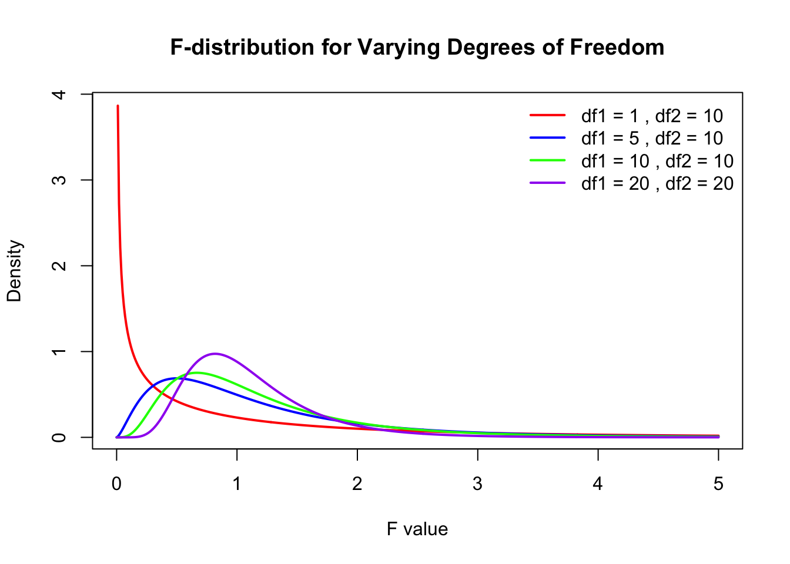
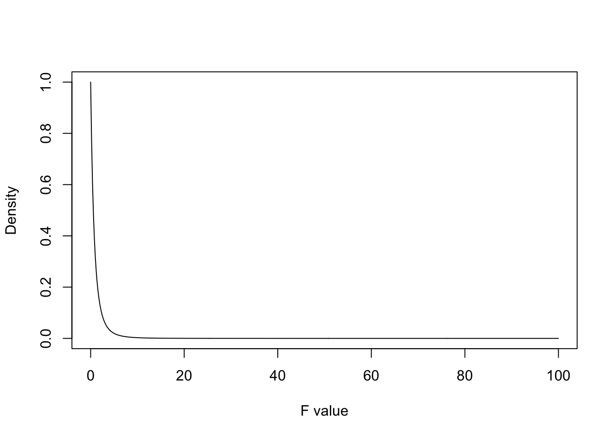
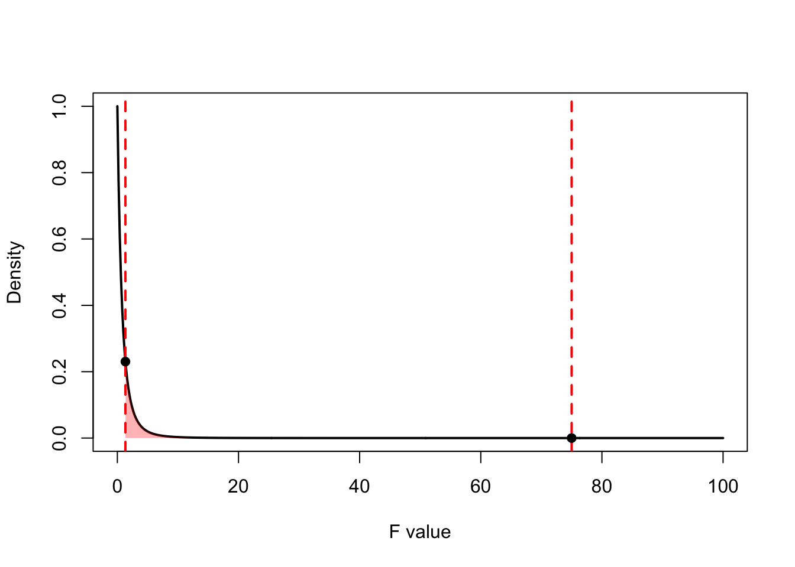

The ANOVA model we have introduced is identical to a regression model with categorical variables, it is just parameterised differently. So why the different names and emphasis on variance - ANalysis Of Variance? A well designed experiment as us to estimate the within-treatment variability and between treatment variability. More specifically, it enables the partitioning of the total sum of squares1 into independent parts, one for each factor in the model (treatment and blocking factors). This allows us unambiqously to estimate the variability in the response contributed by each factor and the experimental error variance! We can then use this partitioning to perform hypothesis tests. In other words: by looking at the variation we can find out if the response differs due to the treatments. An ANOVA applied to a single factor CRD is called a one-way ANOVA or between-subjects ANOVA or an independent factor ANOVA. It is a generalization of the ‘two-sample t-test assuming equal variances’ to the case of more than two populations.
1 In statistics, sums of squares is a measure of variability and refers to squared deviations from a mean or expected value. For example, the residual sums of squares (sum of squared deviations of the observations from the fitted values).
7.1 An Intuitive Explanation
Before we consider real data, we first want to look at a constructed example to explain the main ideas behind ANOVA. Assume that we carried out two experiments on plants removing nitrate (NO\(_3\)) from stormwater. In both experiments, we consider three plant species (uncreatively called ‘A’, ‘B’, and ‘C’). In both experiments, we have three replicates per treatment. We are only interested in comparing the species so there is no control treatment. We obtained the following data:
Table 7.1: Hypothetical Experiment
(a) Experiment 1
Species
A
B
C
40
48
58
42
50
62
38
52
60
Average
40
50
60
(b) Experiment 2
Species
A
B
C
40
65
45
25
35
75
55
50
60
Average
40
50
60
If you look at these datasets carefully, you will see that each of the three species had the same mean in the two experiments. However, the measurements were much more variable in Experiment 2 than in Experiment 1.
Which experiment has better evidence that the true mean NO₃ removal rate differs between species? Pause and think about this before reading on.
Intuitively, we would say that Experiment 1 shows much stronger evidence for a true effect than Experiment 2. Why? Both experiments show the same differences among the treatment (species) means. So the variability in the treatment means is the same. However, the variability among the observations within treatments differs between the two experiments. In Experiment 1, the variability within treatments is much less than the variability among treatments. In Experiment 2, the variability within treatments is about the same as the variability among treatments.
The basic idea of ANOVA relies on the ratio of the among-treatment-means variation to the within-treatment variation. This is the F-ratio. The F-ratio can be thought of as a signal-to-noise ratio:
Large ratios imply the signal (difference among the means) is large relative to the noise (variation within groups), providing evidence of a difference in the means.
Small ratios imply the signal (difference among the means) is small relative to the noise, indicating no evidence that the means differ.
7.2 The F-test
When we take the ratio of two variances, it can be shown that the ratio follows an F-distribution with degrees of freedom equal to those of the two variances.
So, for example, say we want to compare the variability between two independent groups, each with normally distributed observations. We define the test statistic as the ratio of the two sample variances:
\[
F = \frac{s_1^2}{s_2^2}
\]
where \(s_1^2\) and \(s_2^2\) are the variances of the two groups. The resulting statistic follows an F-distribution with degrees of freedom:
\(df_1 = n_1 - 1\) for the numerator (corresponding to variance \(s_1^2\))
\(df_2 = n_2 - 1\) for the denominator (corresponding to variance \(s_2^2\))
The F-distribution is a probability distribution that arises frequently in hypothesis testing, particularly in ANOVA and regression analysis. It is defined only for positive values and is right-skewed. The shape of the distribution depends on the degrees of freedom in the numerator and denominator.
Code
# Define the range of F-valuesx <-seq(0, 5, length.out =500)# Define degrees of freedom pairsdf_pairs <-list(c(1, 10),c(5, 10),c(10, 10),c(20, 20))# Define colors for different linescolors <-c("red", "blue", "green", "purple")# Create an empty plotplot(x, df(x, df_pairs[[1]][1], df_pairs[[1]][2]), type="n",xlab="F value", ylab="Density",main="F-distribution for Varying Degrees of Freedom")# Loop through df pairs and add linesfor (i inseq_along(df_pairs)) {lines(x, df(x, df_pairs[[i]][1], df_pairs[[i]][2]), col=colors[i], lwd=2)}# Add a legendlegend("topright", legend=paste("df1 =", sapply(df_pairs, `[[`, 1), ", df2 =", sapply(df_pairs, `[[`, 2)), col=colors, lwd=2, bty="n")

Key properties of the F-distribution:
It is always non-negative: \(F \geq 0\).
It is asymmetric and skewed to the right, particularly for small degrees of freedom.
As the degrees of freedom increase, the F-distribution approaches a normal shape.
The mean of an F-distribution with \((df_1, df_2)\) degrees of freedom is approximately:
Let’s go back to the linear model for the single-factor completely randomized design that we examined earlier:
\[
Y_{ij} = \mu + \alpha_i + e_{ij}
\]
where \(\mu\) is the overall mean, \(\alpha_i\) are the treatment effects (that is the difference between treatment means and the overall mean), and \(e_{ij}\) are the error terms (the differences between the observation and the fotted value, i.e. treatment mean). Remember that the estimated values for these parameters are the observed values:
The analysis of variance is based on this identity2. The total sums of squares equals the sum of squares between groups plus the sum of squares within groups.
2 In mathematics, an identity is an equation that is always true, regardless of the values of it’s variables. In other words, the identity is true for all observations.
Back to our constructed example. What are the different sums of squares? For Experiment 1, we get: \(SS_{\text{total}} = 624; SS_{\text{between groups}} = 600; SS_{\text{within groups}} = 24\). Verify these numbers and do the same for Experiment 2.
7.4 ANOVA Table
This division of the total sums of sqaures is typically summarised in an analysis of variance table. The first column contains the “source” of the varibility with the first entry (the order is not important, although this is the typical order) representing the between treatment variability (explained variation), second the error (unexplained variation) and lastly the total variation. The second column gives the sums of squares of each source. The third column contains the degrees of freedom.
Source
Sums of Squares (SS)
df
Means Squares (MS)
F
Treatment
\(\sum_i n_i(\bar{Y}_i - \bar{Y})^2\)
\(a-1\)
\(MS_A = SS_A / (a-1)\)
\(MS_A / MSE\)
Residuals (Error)
\(\sum_i \sum_j (Y_{ij} - \bar{Y}_i)^2\)
\(N-a\)
\(MSE = SS_E / (N-a)\)
Total
\(\sum_i \sum_j (Y_{ij} - \bar{Y})^2\)
\(N-1\)
The fourth column contains the Mean Sqaures. This is what we get when we divide sums of sqaures by the appropriate degrees of freedom.
\[ \text{MS} = \frac{SS}{df}\]
This is simply an average and may be seen as an estimate of variance. So when we divide the treatment SS by its degrees of freedom, we get an estimate of the variation due to treatments and simirlary, for the the residual SS, we get an estimate of the error variance. You’ve seen this before!
Degrees of freedom (df) represent the number of independent pieces of information available for estimating a parameter. When making statistical calculations, we typically lose one degree of freedom for every estimated parameter before the current calculation.
For example, when estimating the standard deviation of a dataset, we first estimate the mean, thereby reducing the number of independent observations available to calculate variability. This is why the denominator in the variance formula is \(N-1\):
\[ s^2 = \frac{\sum(Y_i - \bar{Y})^2}{N -1} \] You can think of degrees of freedom as the number of independent deviations around a mean. If we have \(n\) observations and their mean, once we know \(n-1\) of the values, the last one is fixed—it must take on a specific value to satisfy the mean equation. Therefore, only \(n-1\) observations are truly free to vary.
Example: Three Numbers Summing to a Fixed Mean
Say we have three (\(n=3\)) numbers: (4, 6, 8). The mean of these three numbers is 6. If we only knew the first two numbers (4,6) and the mean, the third number must be 8:
Since the third number is uniquely determined by the first two and the mean, we only have \(n-1\) (i.e., 2) degrees of freedom.
Another Intuitive Analogy
Imagine you are distributing a fixed amount of money among friends. If you have R100 and four friends, you can freely allocate money to three friends, but whatever is left must go to the fourth friend to ensure the total remains R100. Similarly, once the first \(n-1\) values are chosen, the last value is determined, limiting the degrees of freedom.
In ANOVA
If you look at the treatment sums of squares: \(\sum_i n_i (\bar{Y}_{i.} - \bar{Y}_{..})^2\). We have \(a\) deviations around the grand mean. But once we know \(a-1\) of the treatment means and the grand mean3, the last mean is fixed. So we have \(a-1\) independent deviations around the overall mean.
3 Remember, \(\mu = \frac{\sum \mu_i}{a}\).
If you look at the treatment sums of squares: \(\sum_i \sum_j (Y_{ij} - \bar{Y}_{..})^2\). We are using \(N\) observations and calculating the deviations of these observations around the overall mean. So, only \(N-1\) observations are free to vary, the last observation is fixed for the calculated mean to hold true.
7.5 Back to the constructed example
What does the ANOVA table look like for our constructed example? You’ve already worked out the sums of squares. What are the df’s and Mean Sqaures?
Let’s have a look at Experiment 1 first.
# Experiment 1 data exp1data <-data.frame(species =rep(c("A","B","C"), each =3),response =c(40,42,38,48,50,52,58,62,60))exp1_anova <-aov(response~species, data = exp1data)summary(exp1_anova)
Df Sum Sq Mean Sq F value Pr(>F)
species 2 600 300 75 5.69e-05 ***
Residuals 6 24 4
---
Signif. codes: 0 '***' 0.001 '**' 0.01 '*' 0.05 '.' 0.1 ' ' 1
And then Experiment 2:
# Experiment 2 data exp2data <-data.frame(species =rep(c("A","B","C"), each =3),response =c(40,25,55,65,35,50,45,75,60))exp2_anova <-aov(response~species, data = exp2data)summary(exp2_anova)
Df Sum Sq Mean Sq F value Pr(>F)
species 2 600 300 1.333 0.332
Residuals 6 1350 225
Since the overall mean and the treatment means were the same in both experiment, we expected the \(SS_{\text{treatment}}\) to be the same in both experiments. This was indeed the case – they are 600 in both experiments. The sample sizes were also the same in both experiments, so we would expect the df to be the same. With 9 observations, we have 8 df in total. Three treatments (Species) leads to 2 treatment df and 6 df remain for the residuals. The difference between the two experiments is that the observations were much more variable in Experiment 2 than in Experiment 1. Accordingly, we find that \(SS_{\text{error}}\) was much larger in Experiment 2, and this led to larger MSE in Experiment 2. How does this affect the conclusions we draw from each of the experiments? This is where the F-ratio comes in.
7.6 The F-test in ANOVA
We first set up the null and alternate hypothesis. The null hypothesis is that all treatments have the same mean, or equivalently, that all treatment effects are zero.
\[H_0: \mu_1 = \mu_2 = \ldots = \mu_a\] And the alternate hypothesis is the opposite of that:
\[H_A: \text{At least one } \mu_i \text{ is different.}\] :::{.column-margin} Read that again. The alternative is that at least one treatment is different. It is not that all treatment means are different. :::
If \(H_0\) is true, the among-treatment-means variation should equal the within-treatment variation. We can use the F-ratio to test \(H_0\):
\[ F = \frac{MS_A}{MSE} \]
This ratio has an F-distribution with \(a-1\) numerator degrees of freedom and \(N-a\) denominator degrees of freedom.
You can think of the F-ratio as a signal-to-noise ratio. If \(H_0\) is true, \(F\) is expected to be close to 1. If \(H_0\) is false, \(F\) is expected to be much larger than 1. This means that the F-test we conduct is a one-sided upper tailed test. If \(H_0\) is false, the means squares for treatment will be much larger than the MSE, resulting in large F-values. We are only interested in this one side of possible outcomes therefore, a one-sided test.
In Experiment 1, \(F = \frac{300}{4} = 75\), which leads to a very small \(p\)-value (\(< 0.001\)). The signal was much larger than the noise, and our data are very unlikely if \(H_0\) were true. So we have good evidence that the treatments differ.
In Experiment 2, \(F = \frac{300}{225} = 1.33\), which leads to a large \(p\)-value (\(0.33\)). Signal and noise were of similar magnitude, and our data are not unlikely if \(H_0\) were true. So we have no evidence against \(H_0\), i.e., no evidence that nitrate extraction differs between species.
How did we get these p-values? This is the same as in any hypothesis test. We have a test statistic (which quantifies the strength of …) and to say somehting about how likely this test statistic (or more extreme is) under the null hypothesis, we need the null distribution of the test statistic (that is the sampling distribution of the test statistic as if the null hypothesis were true). We then compared the observed value of the test statistic to that null distribution and asked ourselves how unusual it is in light of that distribution. Does out test statistic belong to this null distribution?
For the F-value of test statistic follows an F distribution as specified above.
\[\text{F}^* \sim \text{F}_{(a-1),\;(N-a)}\]
For both experiment, this equates to an F distribution with 2 numerator and 6 denominator degrees of freedom which looks like this:
Code
# Define the range of F-valuesx <-seq(0, 100, length.out =500)y <-df(x, df1 =2, df2 =6)plot(x, y, type="l",xlab="F value", ylab="Density",main="")

We can plot the test statistics on the graph as well and highlight the area under the curve to the right of each of these test statistics:
Code
# Define x valuesx <-seq(0, 100, length.out =500)y <-df(x, df1 =2, df2 =6)# Define test_statstest_stats <-c(75, 1.33)# Plot the F-distribution density curveplot(x, y, type ="l", col ="black", lwd =2,xlab ="F value", ylab ="Density",main ="")# Add vertical lines at test_statsabline(v = test_stats, col ="red", lty =2, lwd =2)# Shade the areas to the right of the test_statspolygon(c(test_stats[1], x[x >= test_stats[1]], max(x)), c(0, y[x >= test_stats[1]], 0), col =rgb(0, 0, 1, 0.3), border =NA)polygon(c(test_stats[2], x[x >= test_stats[2]], max(x)), c(0, y[x >= test_stats[2]], 0), col =rgb(1, 0, 0, 0.3), border =NA)# Add points at the critical valuespoints(test_stats, df(test_stats, df1 =2, df2 =6), pch =19, col ="black")

Remember sampling distributions are probability distributions. For continuous random variables, the area under the curve represents probability. Specifically, the probability of a random variable taking on a specific value or larger, is the area udner the curve to the right of that value. For test statistics and their probability distribution, that probability is the p-value. The p-value is the probability of observing a test statistic at least as extreme as we did if the null hypothesis was in fact true. The smaller the p-value, the stronger the evidence against \(H_0\).
We can obtain the p-value in two ways (you will need to be able to do both):
Using Software.
In R, there are several built-in functions for certain probability distributions. These functions typically follow a naming convention:
d<dist>() for density functions
p<dist>() for cumulative probability functions
q<dist>() for quantile functions
r<dist>() for random sampling
For example, when working with the F-distribution, we use:
df(x, df1, df2) for the probability density function (PDF)
pf(x, df1, df2) for the cumulative distribution function (CDF)
qf(p, df1, df2) for quantiles
rf(n, df1, df2) for random sampling
To obtain a p-value, we often use the cumulative probability functions (p<dist>()) with returns \(Pr[X<x]\) so \(Pr[X>x] = 1 - Pr[X<x]\). Below is how to obtain the p-value for the second experiment:
f_statistic <-1.33df1 <-2# Numerator degrees of freedomdf2 <-6# Denominator degrees of freedom# Upper-tail probability (right-tailed test)p_value <-1-pf(f_statistic, df1, df2)p_value
[1] 0.332583
This value is quite large and corresponds to the area to the right of an F value of 1.33 for the distribution above. We interpret this p-value as the test statistic is quite likely to have come from this null distribution, there is a 33% chance of observing this test statistic or more exteme if the null hypothesis is true. We do not have strong evidence against the null hypothesis of equal means.
Caution
A large p-value does not mean that \(H_0\) is true!
The p-value is not the probability that the null hypothesis is true.
The p-value is not the probability that the alternative hypothesis is false.
The p-value is a statement about the relation of the data to the null hypothesis.
The p-value does not indicate the size or biological importance of the observed pattern.
Tip
You can round the p-value if you need to enter the value to a certian number of decimals in a quiz or test using the function round.
Using tables.
Before the days of programming, statisticians used tablse..
8 Conclusion: Does social media multitasking impact academic performance of students?